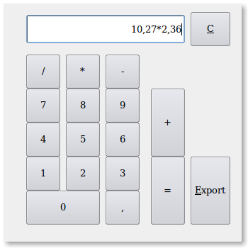

~ Laurux.Pos ~

~ Laurux.Pos ~ |
|
|
|
Appel quantité, appel calculette, modification de produit, appel poids de la balance électronique.
1- Appel quantité.
L'appel de la quantité est utile lorsque les produits sont appelés par une lecture optique, car, comme nous l'avons vu, la lecture optique enregistre automatiquement la ligne avec une quantité égale à 1 par défaut. Donc, pour éviter de faire autant de lecture que de quantité de produit (ce qui serait possible) on a la possibilité de demander au programme de s'arreter sur la zone quantité. Cela se fait par la touche F5 avant d'effectuer la lecture du code barre.
Si une modification de la quantité est apportée
alors sur une ligne du ticket on aura le prix unitaire et le prix total
sur une autre.
2- Appel calculette.
Si on a besoin d'effectuer un calcul, une surface par exemple, il est possible d'appeler la calculette de Laurux.Pos en faisant F5 lorsque le curseur se trouve dans la zone "Quantité".

On peut faire son calcul en saisissant manuellement ses données ou en cliquant sur les boutons de la calculette. Valider un fois ou cliquer sur le bouton "="affiche le résultat, puis, le résultat étant affiché, une deuxième validation ou un clic sur le bouton "Export" va rapatrier le résultat sur la zone "Quantité" du ticket.
NB: Pour sortir de la calculette sans rien importer faire F5
3- Modification de produit.
Pour modifier un produit, désignation ou prix, on fait F3 quant on est sur la zone "Quantité".
Dans le cas d'une lecture code barre, cela veut dire qu'il faudra faire
un appel quantité avant de faire la lecture du produit, puis faire F3 lorsqu'on sera sur la zone "Quantité".
4- Appel poids de la balance électronique.
L'appel du poids de la balance éléctronique se fait par la touche F10 lorsqu'on est sur la zone quantité.
NB : La balance doit être paramétrée pour envoyer les données du poids net en kilogramme.
----------------------------------------------------------------------------------------------------------------------